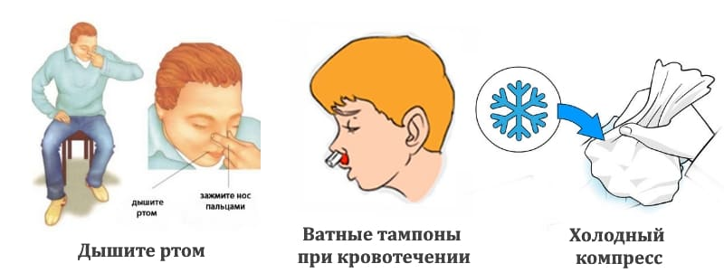
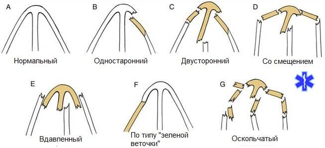
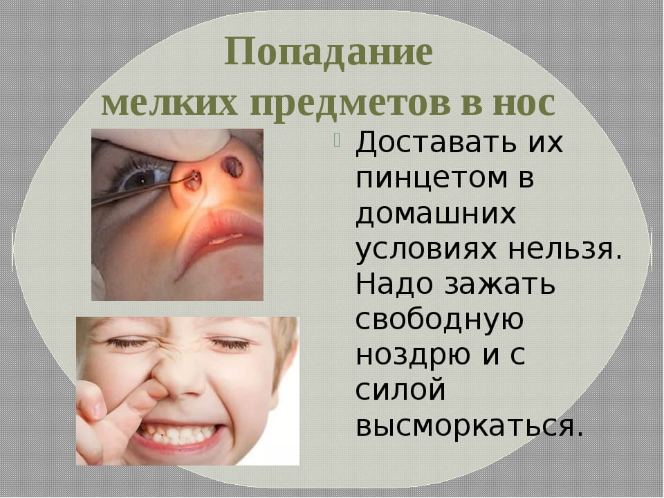

Будьте готовы к сильным падениям и сплющенному носу в течение того времени, когда ребенок растет. К счастью, в большинстве случаев и ребенок, и нос оправляются от ударов без деформаций. Нос имеет замечательное устройство и выполняет функцию амортизатора, с тем чтобы удары лицом не приводили к травмам головы. Когда нос приходит в соприкосновение с твердой поверхностью, он расплющивается, поскольку тонкие носовые кости раздвигаются в разные стороны. Если ваш ребенок расплющил себе нос, выполните следующее:
• Приложите к носу ребенка пакет со льдом, слегка нажимая на выпирающий вздутый участок с обеих сторон носа чуть ниже внутреннего угла глаза. Держите лед как минимум 20 минут или так долго, как будет терпеть ребенок. Чем скорее вы приложите после травмы лед и чем дольше будете держать его, тем меньше будет шишка.

• Усадите ребенка вертикально, наклонив вперед, чтобы меньше крови попадало в заднюю часть глотки.
В большинстве случаев сплющенные носы действительно имеют перелом, но практически всегда кости вправляются сами, очень быстро, за пару недель, не оставляя никаких косметических дефектов или функциональных нарушений. Для обращения за медицинской помощью при переломе носа имеются две причины: косметическая, если нос был сдвинут на одну сторону и остался кривым, и функциональная, если затруднено прохождение воздуха. Осмотрите нос, чтобы выявить наклон в одну сторону или в другую. Кончиком пальца осторожно нажмите с боковой стороны поочередно на каждую ноздрю, чтобы закрыть ее и осмотреть, может ли ребенок нормально дышать через одну ноздрю с закрытым ртом. Если ребенок очень маленький, возможно, лучше попробовать провести эту процедуру, когда ребенок будет спать. Если очевидно повреждение или косметического, или функционального характера, незамедлительно обратитесь за медицинской помощью. В большинстве случаев врач, который будет осматривать вашего ребенка, посоветует подождать одну-две недели, чтобы посмотреть, не вернутся ли кости в нормальное положение.

Затем врач произведет повторный осмотр носа ребенка, чтобы выяснить, осталось ли косметическое или функциональное повреждение, и порекомендует соответствующее лечение. Переломы детских носов редко требуют вправления.
«Каким пальцем ты ковыряешь в носу?» Именно этот хитрый вопрос я задаю малышам. (Если вы спросите: «Ты ковыряешь в носу?», – то гарантированно получите в ответ: «Нет».) Носовые кровотечения, вызванные ковырянием, наиболее часты в сезоны аллергии, потому что ребенок царапает и без того воспаленную слизистую оболочку носа. Центральное отопление пересушивает воздух и раздражает слизистую носа, чем объясняются носовые кровотечения в зимние месяцы. Вапоризатор, включенный в спальне ребенка в течение тех месяцев, что работает центральное отопление, должен устранить эту причину кровотечений. Если носовые выделения при простуде засохнут и превратятся в корочки, вам недолго придется ждать того момента, когда маленький пальчик окажется в маленьком носу, за чем последует маленькое кровотечение. Если закапать в нос солевые капли и нанести, может быть, немного мази с антибиотиком или вазелина, корочки отстанут и кровотечения удастся избежать.
Вот как остановить носовые кровотечения:
• Посадите ребенка к себе на колени, слегка наклонив его вперед.
• Сдавите обе ноздри вместе и не отпускайте как минимум 10 минут. В большинстве случаев кровь течет из сосудов, пронизывающих носовую перегородку. Для лучших результатов надавите на эти сосуды, вложив в кровоточащие ноздри скрученные кусочки мокрой ваты, чтобы перекрыть носовые ходы примерно на две трети ширины. Если после этого вы сожмете ноздри, не вынимая ваты, то окажете давление на носовую перегородку.
• Если это не остановило кровотечение, сдавите крупные кровеносные сосуды, снабжающие нос, которые расположены в том месте, где верхняя губа соединяется с десной, сразу под ноздрями. Положите комок мокрой ваты под верхнюю губу и надавите двумя пальцами в направлении вверх, поместив пальцы под губу, или же надавите одним пальцем на верхнюю губу чуть ниже ноздрей.
• Держите ребенка в вертикальном положении, чтобы кровь не затекала в глотку, что может вызвать рвоту или чихание. Это может выбить сгусток крови, и тогда кровотечение возобновится.
• Нужно чтобы ребенок держал рот открытым, для того чтобы чихание или кашель не затрагивали носовую полость, а для этого держите открытым собственный рот.
• После того как кровь остановится, оставьте вату в ноздре еще на три-четыре часа в качестве тампона. Вынимайте ватный тампон осторожно (смочите водой, если присох), стараясь не вырвать тромб, иначе кровотечение возобновится. Если ребенок постарше, можно оставить тампон на более продолжительное время, поскольку меньше опасений, что ребенок подавится тампоном.
• Если эти меры не остановили кровь, доставьте ребенка к врачу или в приемный покой.
• Чтобы ребенок не ковырял в носу, коротко стригите ему ногти, повысьте влажность в комнате и лечите дыхательные аллергии.
Маленькие дети любят все засовывать, а нос – очень удобное для этого место. Самые популярные предметы для засовывания в нос – фасоль, горох, кусочки ваты и маленькие камешки.
Как ни удивительно, дети редко жалуются на инородное тело в носу, но вам следует заподозрить это, если вы заметили дурно пахнущие желтые выделения из одной ноздри (при простуде течет из обеих ноздрей, и выделения не пахнут).
Чтобы извлечь из носа ребенка посторонний предмет, попробуйте следующее:
• Если вы видите предмет, попробуйте вытащить его пинцетом с тупыми концами. (Тугое пеленание может быть полезно и здесь, чтобы зафиксировать руки ребенка и не позволить им мешать вам.)
• Если предмет находится очень далеко, глубоко в носу, сожмите свободную ноздрю и попросите ребенка чихнуть с закрытым ртом. Это может выбить предмет наружу.

• Если предмет растворим водой, например, это кусочек конфеты, отведите ребенка в душ и пусть пар растворит конфету. Или закапайте в нос немного солевых капель, чтобы они размягчили предмет и уменьшили его размеры.
Если вам не удается извлечь предмет вышеперечисленными способами, отвезите ребенка к врачу или в отделение скорой помощи, где врач сможет достать инородное тело специальным инструментом.
Не давайте ребенку ложиться на спину и спать, пока посторонний предмет еще находится у него в носу, поскольку ребенок может вдохнуть его в легкие.

Марта, Уильям, Роберт, Джеймс Сирс"Ваш малыш от рождения до двух лет"